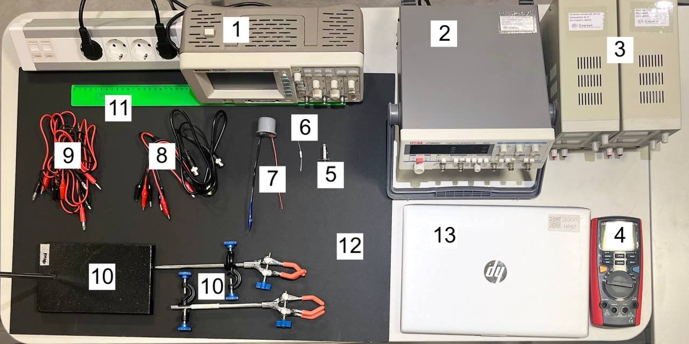
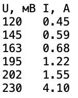
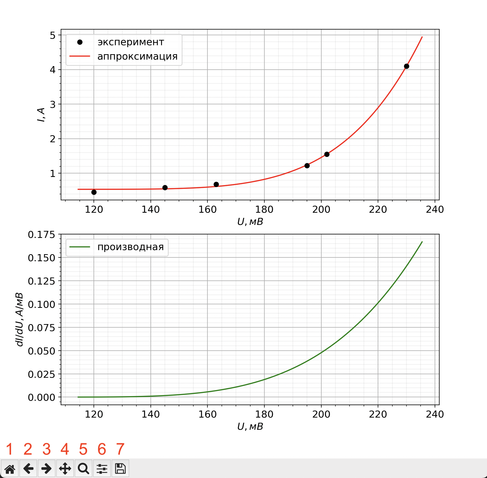
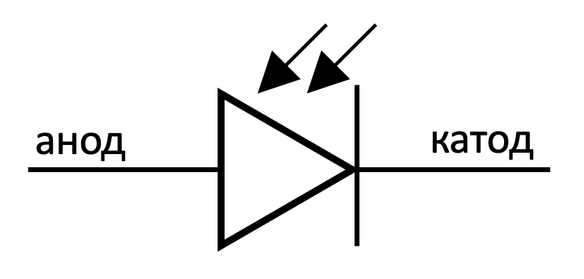
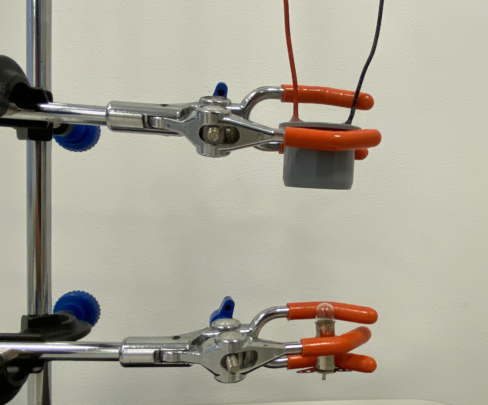
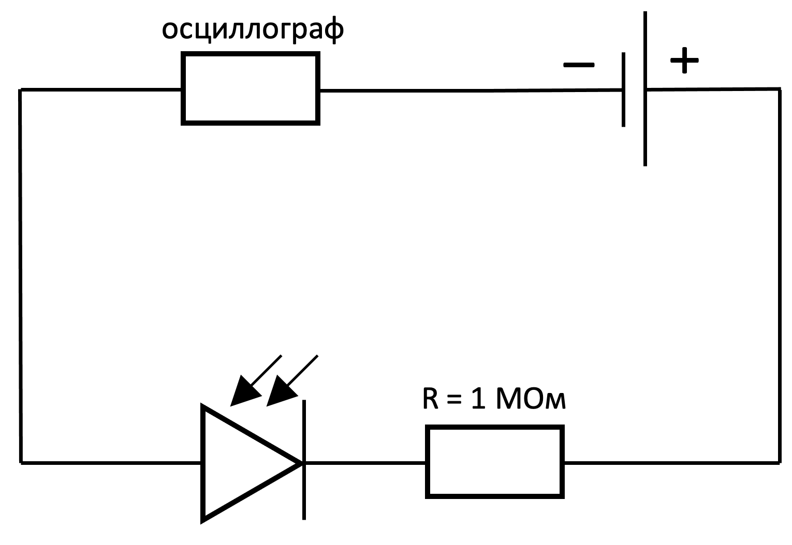

X24 (2024) — English translation
Equipment: Oscilloscope AC generator DC source (2 pcs.) Multimeter Incandescent lamp in holder Resistor $1~Ом$ Photodiode in a housing connected in series with resistor $1~МОм$ BNC alligator wires (3 pcs.) Banana alligator wires (6 pcs.) Tripod with two legs Ruler $50~cm$ Black cardboard backing laptop
Attention! You have been given a photodiode connected in series with resistor $1~МОм$, the resistor is wrapped in electrical tape. It is strictly forbidden to remove the electrical tape and connect the photodiode to the circuit otherwise than in series with this resistor. Failure to comply with this requirement will result in the tour being cancelled. You are prohibited from opening or using anything that is located on your computer outside the folder with your last name. Failure to comply with this requirement will result in the tour being cancelled. The effective (rms) voltage across the lamp should not exceed $11~В$, otherwise the lamp may burn out. Burnt out lamps are not replaced. The multimeter can only be used in voltmeter and ohmmeter modes.
Rice. 1. Equipment

The program is used to approximate experimental data with a smoothing function. Use the program only when instructed to do so in the assignment text. Experimental data is written to the files “V(T)_sine.txt” or to “V(T)_stage.txt”. The text of the condition will indicate which file to write the data to. In the first line, the quantities under study and their dimensions are entered in the format “X, [X] Y, [Y]”, where X, Y are quantities, [X], [Y] are their dimensions. There must be a space after the comma! Next, pairs of values X, Y are entered in each line (X and Y are separated by an arbitrary number of spaces). The place separator is a dot.
Experimental data is written to the files “V(T)_sine.txt” or to “V(T)_stage.txt”. The text of the condition will indicate which file to write the data to.
In the first line, the quantities under study and their dimensions are entered in the format “X, [X] Y, [Y]”, where X, Y are quantities, [X], [Y] are their dimensions. There must be a space after the comma!
Next, pairs of values X, Y are entered in each line (X and Y are separated by an arbitrary number of spaces). The place separator is a dot.
Rice. 2. Data entry example

A few seconds after launch, the program prompts you to select a file to import data. To select a file, enter the number 1 or 2 into the console. After this, the program displays two pictures (see Fig. 3): the first shows the initial points and the graph of the function approximating them, the second shows the graph of the derivative of the approximating function. Note 1: After starting the program, it may take time ($\sim 1 ~мин$) to process the data. When you hover the cursor over the chart, the cursor coordinates are indicated in the lower right corner of the window. The buttons in the lower left corner of the window are responsible for the following actions: Return the graphs to their original form. Take a step back. Going one step further. Chart moving mode. After clicking the button, you can move the chart around the screen by holding it with the left mouse button. Chart approximation mode. After clicking the button, you can zoom in on the selected section of the graph. By holding down the left mouse button and moving the cursor, you can select the desired area. Display settings. By moving the sliders, you can adjust the size of the graphs and the distance between them and the window borders. Saving schedules. After clicking, it allows you to save the window with graphs in .png image format. The saved image is not interactive, so before saving, adjust the graphs to the form in which you want reviewers to see them. Note 2: Sometimes the buttons do not respond to presses. In this case, try pressing other buttons, or closing the window and restarting the program.
Note 1: After starting the program, it may take time ($\sim 1 ~мин$) to process the data.
When you hover the cursor over the chart, the cursor coordinates are indicated in the lower right corner of the window. The buttons in the lower left corner of the window are responsible for the following actions:
Note 2: Sometimes the buttons do not respond to presses. In this case, try pressing other buttons, or closing the window and restarting the program.
Rice. 3. Data output example

Please note that the approximation function is selected for a specific physical dependence described in the condition, therefore, for points that do not correspond to this dependence, the approximation is unacceptable.
Electromagnetic radiation (hereinafter referred to as radiation) is a set of electromagnetic waves of different lengths. The energetic luminosity $w$ of a body is the amount of total power emitted by the body per unit surface area. Gray body is a model in which the energetic luminosity and body temperature are related by the formula: $$w = \varepsilon \sigma T^4,$$ где $\sigma$ — постоянная Стефана-Больцмана, $\varepsilon$ — так называемая поглощательная способность тела ($\varepsilon < 1$). Численное значение постоянной Стефана-Больцмана: $$\sigma = 5.67 \cdot 10^{-8}~Вт/(м^2 \cdot К^4).$$ Лампа накаливания — искусственный источник света, в котором свет испускает тело накала, нагреваемое электрическим током до высокой температуры. В выданной вам лампе в качестве тела накала используется вольфрамовая нить. Чтобы исключить окисление тела накала при контакте с воздухом, его помещают в вакуумированную колбу. Сопротивление вольфрама зависит от температуры, в рамках данной задачи эту зависимость можно считать линейной: $$R = R_0(1+\alpha (T-T_0)),$$ где $R_0$ — сопротивление нити лампы при комнатной температуре $T_0$. Для вольфрама $\alpha$ считайте известной величиной: $$\alpha = 4.8 \cdot 10^{-3}~К^{-1}.$$ При измерении сопротивления лампы омметром можно пренебречь её нагревом относительно комнатной температуры. Комнатную температуру считайте постоянной и равной $T_0 = 295~K$.
The energetic luminosity $w$ of a body is the amount of total power emitted by the body per unit surface area.
Gray body is a model in which energetic luminosity and body temperature are related by the formula:
$$w = \varepsilon \sigma T^4,$$
where $\sigma$ is the Stefan-Boltzmann constant, $\varepsilon$ is the so-called absorption capacity of the body ($\varepsilon < 1$). Numerical value of the Stefan-Boltzmann constant:
$$\sigma = 5.67 \cdot 10^{-8}~Вт/(м^2 \cdot К^4).$$
An incandescent lamp is an artificial light source in which light is emitted by an incandescent body heated by an electric current to a high temperature. The lamp you were given uses a tungsten filament as a filament. To prevent oxidation of the filament upon contact with air, it is placed in an evacuated flask.
The resistance of tungsten depends on temperature; within the framework of this problem, this dependence can be considered linear:
$$R = R_0(1+\alpha (T-T_0)),$$
where $R_0$ is the resistance of the lamp filament at room temperature $T_0$. For tungsten $\alpha$ consider as a known quantity:
$$\alpha = 4.8 \cdot 10^{-3}~К^{-1}.$$
When measuring the resistance of a lamp with an ohmmeter, you can neglect its heating relative to room temperature. Consider the room temperature constant and equal to $T_0 = 295~К$.
This problem is devoted to the study of the electrical properties of the lamp and photodiode, as well as the emissive and thermal properties of the lamp.
The power released to the lamp filament when a constant voltage is applied to it is removed from it in two ways: Electromagnetic radiation Heat exchange with the environment Since the bulb in which the filament is located is evacuated, it can be assumed that the power of heat exchange with the environment is small compared to the radiation power. It can also be assumed that the lamp filament is a gray body, and for its energy luminosity $w$, as indicated in the theoretical reference, the formula $$w = \varepsilon \sigma T^4.$$ is satisfied
Since the flask in which the filament is located is evacuated, it can be assumed that the power of heat exchange with the environment is small compared to the radiation power. It can also be assumed that the lamp filament is a gray body, and for its energetic luminosity $w$, as indicated in the theoretical reference, the formula is satisfied
$$w = \varepsilon \sigma T^4.$$
A photodiode is a semiconductor element that is photosensitive. This means that its electrical properties depend on the power of radiation hitting it. A photodiode has two terminals: an anode and a cathode. For the photodiode you were given, the red wire corresponds to the anode, the black wire to the cathode. We will consider the voltage on the photodiode positive if the anode potential is greater than the cathode potential. We will consider the current strength to be positive if the current flows through the photodiode from the anode to the cathode. If the current strength is positive, we will say that the current flows in the forward direction, if it is negative, in the opposite direction. In this part of the problem, we will study how the illumination of a photodiode affects its behavior in an electrical circuit. Attention! The negative side of the DC source is grounded, so it must be connected to the oscilloscope ground.
A photodiode has two terminals: an anode and a cathode. For the photodiode you were given, the red wire corresponds to the anode, the black wire to the cathode.
We will consider the voltage on the photodiode positive if the anode potential is greater than the cathode potential. We will consider the current strength to be positive if the current flows through the photodiode from the anode to the cathode. If the current strength is positive, we will say that the current flows in the forward direction, if it is negative, in the opposite direction.
In this part of the problem, we will study how the illumination of a photodiode affects its behavior in an electrical circuit.
Attention! The negative side of the DC source is grounded, so it must be connected to the oscilloscope ground.
Rice. 4. Photodiode leads

Place the tripod on a black cardboard backing. Its use makes it possible to reduce background illumination of the photodiode. In the future, ignore its influence on the measurements. Fix the photodiode in one leg of the tripod, and in the other leg fix the incandescent lamp under the photodiode (the orientation of the photodiode and the lamp is shown in Fig. 5). The distance between the lamp filament and the photodiode should be approximately $10~cm$.
Rice. 5. Orientation of photodiode and lamp

The current through the photodiode in the forward direction should not exceed $1~мкА$. At this point, do not examine photodiode voltages less than $-0.4~В$.
Sketch the measurement setup used. Consider the oscilloscope resistance $R_{osc} = 1~МОм$ known.
Note. The voltage across a photodiode refers to the voltage across it only, and not the total voltage across it and the resistor connected to it.
The main goal of this part of the problem is to obtain the dependence of the heat capacity of the lamp filament on its temperature over the widest possible temperature range. According to theoretical information, the total radiation power of a gray body (which we consider the filament of a lamp) depends only on its temperature and size, therefore the radiation power of the lamp completely determines its temperature. Connect the photodiode, oscilloscope and power supply as shown in Fig. 6. Set the voltage on the source $16~В$ and do not change it in the future. With this connection, the current through the photodiode and, therefore, the voltage on the oscilloscope will depend in some way on the power of the light incident on the photodiode. We will study the dependence of the voltage on the oscilloscope on the temperature of the lamp experimentally (points C8, C10), and then approximate it with some function, which we will use for calculations in the future. Further, the voltage on the oscilloscope channel included in the circuit of Figure 6 will be denoted by the letter $V$, the voltage on the lamp - $U$ (note that it may differ from the generator readings), time - $t$, and the temperature of the lamp filament - $T$. Orient the lamp and photodiode the same way as in part B.
According to theoretical information, the total radiation power of a gray body (which we consider the filament of a lamp) depends only on its temperature and size, therefore the radiation power of the lamp completely determines its temperature.
Connect the photodiode, oscilloscope and power supply as shown in Fig. 6. Set the voltage on the source $16~В$ and do not change it in the future. With this connection, the current through the photodiode and, therefore, the voltage on the oscilloscope will depend in some way on the power of the light incident on the photodiode. We will study the dependence of the voltage on the oscilloscope on the temperature of the lamp experimentally (points C8, C10), and then approximate it with some function, which we will use for calculations in the future.
Further, the voltage on the oscilloscope channel included in the circuit of Figure 6 will be denoted by the letter $V$, the voltage on the lamp - $U$ (note that it may differ from the generator readings), time - $t$, and the temperature of the lamp filament - $T$.
Orient the lamp and photodiode the same way as in part B.
Rice. 6. Connection diagram

Connect the lamp to the alternating current generator and apply a sinusoidal voltage to it with the highest possible amplitude and frequency $f_1 \approx 20~Гц$. Make sure that the dependence $V(t)$ has the form of a sinusoid with a frequency $2f_1$ and a constant shift relative to zero. Note. There may be a small constant shift in the default generator output that significantly changes the observed signal on the oscilloscope. Remove this shift using the oscillator's DC LEVEL setting. Now apply a step voltage to the circuit with some constant shift and frequency $f_2 = 40~Гц$. Verify that the $V(t)$ relationship has a sawtooth shape with a frequency $f_2$ and a constant offset.
Note. There may be a small constant shift in the default generator output that significantly changes the observed signal on the oscilloscope. Remove this shift using the oscillator's DC LEVEL setting.
Now apply a step voltage to the circuit with some constant shift and frequency $f_2 = 40~Гц$. Verify that the dependence $V(t)$ has a sawtooth shape with frequency $f_2$ and a constant offset.
Let us theoretically describe the output signal of an oscilloscope for an arbitrary periodic signal on a lamp $U(t)$ with a frequency $f$. We will assume that the regime has been established, so the temperature change is also periodic. Points C2-C6 allow you to find the dependence $V(t)$ in general form. If you have difficulty deriving the theory, you can refer to C7 and use the expressions there. Let $P(T)$, $R(T)$ be the lamp radiation power and the resistance of the lamp filament, respectively, at a filament temperature $T$. Let us denote the heat capacity of the thread at the same temperature $C(T)$. We will also assume that at any moment in time the temperatures of all points of the thread are the same.
If you have difficulty deriving the theory, you can refer to C7 and use the expressions there.
Let $P(T)$, $R(T)$ be the radiation power of the lamp and the resistance of the lamp filament, respectively, at the filament temperature $T$. Let us denote the heat capacity of the thread at the same temperature $C(T)$. We will also assume that at any moment in time the temperatures of all points of the thread are the same.
In subsequent paragraphs we will assume that the relative deviation of the lamp filament temperature from the average is small. Suppose that when the signal $U(t)$ is applied to the lamp, the filament temperature makes small fluctuations near a certain value $T_1$. Taking into account the approximation made, the following functions can be considered constants at any time: $P(T) \approx P(T_1) = P_1$, $R(T) \approx R(T_1) = R_1$, $C(T) \approx C(T_1) = C_1$.
$$\langle U^2(t) \rangle = f \int \limits_0^{1/f} U^2(t) dt.$$
Let at time $t = 0$ the temperature of the lamp filament be equal to $T_1$. Let's denote it by $\Delta T = T-T_1$.
Due to the small temperature fluctuations, the voltage on the oscilloscope $V$ also makes small fluctuations near a certain steady-state value $V_1$. Let's denote it by $\Delta V = V-V_1$. Let the dependence of the voltage on the oscilloscope on the temperature of the filament $V(T)$ and, accordingly, the dependence of the derivative on temperature $(dV/dT)(T)$ be known (in the future, these dependences will be obtained experimentally).
Now, having obtained the dependence in general form, let us consider two special cases of the type of signal on the lamp $U(t)$.
Present the answer in the form of a graph $V(t)$, indicating all its characteristic parameters. Use $(dV/dT)(T_1)$, $R_1$, $C_1$, $f$, $U_0$, $U_1$, $U_2$.
For each case, express the heat capacity of the lamp filament $C_1$ through the difference between the maximum and minimum voltage on the oscilloscope $\Delta V = V_{max}-V_{min}$, $(dV/dT)(T_1)$, $R_1$, $f$, $U_0$, $U_1$, $U_2$.
If you were unable to get answers at this point, then you can use the following expressions:
If you use these formulas, please state this explicitly in your solution.
Now for further calculations it is necessary to obtain the experimental dependence $V(T)$, approximate it with some function and, using a computer program, obtain graphs of the function itself and its derivative. From theory it follows that when connecting a photodiode according to the diagram in Fig. 6, as the radiation power incident on the photodiode increases, the voltage $V$ increases, but the maximum possible voltage $V$ is limited to the value $\approx8~В$. If you continue to increase the radiation power after reaching this value, the voltage $V$ will change very little (you can verify this yourself), so voltages $V<8~В$ should be used for measurements. In order to subsequently use the graph $V(T)$ as efficiently as possible, it is necessary that the voltage $V$ be close to the limit $8~В$ (we will use the value $7~В$ “with a margin”) at the maximum possible radiation power of the lamp in each specific operating mode.
From theory it follows that when connecting a photodiode according to the diagram in Fig. 6, as the radiation power incident on the photodiode increases, the voltage $V$ increases, but the maximum possible voltage $V$ is limited to the value $\approx8~В$. If you continue to increase the radiation power after reaching this value, the voltage $V$ will change very little (you can verify this yourself), so voltages $V<8~В$ should be used for measurements.
In order to subsequently use the graph $V(T)$ as efficiently as possible, it is necessary that the voltage $V$ be close to the boundary $8~В$ (we will use the value $7~В$ “with a margin”) at the maximum possible radiation power of the lamp in each specific operating mode.
Connect the lamp to the generator by feeding it a sinusoidal signal of maximum amplitude and frequency $f_0 = 1~кГц$. This connection corresponds to the maximum possible emission power of the lamp when a sinusoidal signal is supplied to it from the generator you have. Position the lamp and photodiode relative to each other so that the steady-state voltage on the oscilloscope connected to the circuit with the photodiode is $V_c \approx 7~В$. While performing steps C8, C9, do not change the relative position of the lamp and photodiode! Disconnect the lamp from the AC source and connect to the DC source. Apply a voltage $U_c$ to it so that the voltage on the oscilloscope is again equal to $V_c \approx 7~В$.
Disconnect the lamp from the AC source and connect to the DC source. Apply a voltage $U_c$ to it so that the voltage on the oscilloscope is again equal to $V_c \approx 7~В$.
Run the program “lamp.exe” and select input data from the file “V(T)_sine.txt”. The program will display a graph of the approximated dependence $V(T)$, as well as a graph of its derivative. Apply a sinusoidal voltage to the lamp of the maximum possible amplitude and frequency $f_1 = 20~Гц$. If necessary, you can change the frequency slightly.
Apply a sinusoidal voltage to the lamp of the maximum possible amplitude and frequency $f_1 = 20~Гц$. If necessary, you can change the frequency slightly.
Now it is necessary to obtain the dependence $V(T)$ again, since the maximum effective voltages on the lamp when applying a sinusoidal signal and a step one can differ noticeably. Connect the lamp to the generator by feeding it a step signal of maximum amplitude and frequency $f_0 = 1~кГц$. Eliminate permanent voltage shift. This connection corresponds to the maximum possible radiation power of the lamp when a step signal is supplied to it from your existing generator. Position the lamp and photodiode relative to each other so that the steady-state voltage on the oscilloscope connected to the circuit with the photodiode is $V_c \approx 7~В$. While performing steps C10, C11, do not change the relative position of the lamp and photodiode! Disconnect the lamp from the AC source and connect to the DC source. Apply a voltage $U_c$ to it so that the voltage on the oscilloscope is again equal to $V_c \approx 7~В$.
Connect the lamp to the generator by feeding it a step signal of maximum amplitude and frequency $f_0 = 1~кГц$. Eliminate permanent voltage shift. This connection corresponds to the maximum possible radiation power of the lamp when a step signal is supplied to it from your existing generator. Position the lamp and photodiode relative to each other so that the steady-state voltage on the oscilloscope connected to the circuit with the photodiode is $V_c \approx 7~В$. While performing steps C10, C11, do not change the relative position of the lamp and photodiode!
Disconnect the lamp from the AC source and connect to the DC source. Apply a voltage $U_c$ to it so that the voltage on the oscilloscope is again equal to $V_c \approx 7~В$.
Run the program “lamp.exe” and select input data from the file “V(T)_stage.txt”. The program will display a graph of the approximated dependence $V(T)$, as well as a graph of its derivative. Apply a step voltage to the lamp of the highest possible amplitude and frequency $f_2 = 40~Гц$. You can change the frequency if necessary.
Apply a step voltage to the lamp with the highest possible amplitude and frequency $f_2 = 40~Гц$. You can change the frequency if necessary.
Source: https://pho.rs/p/3710